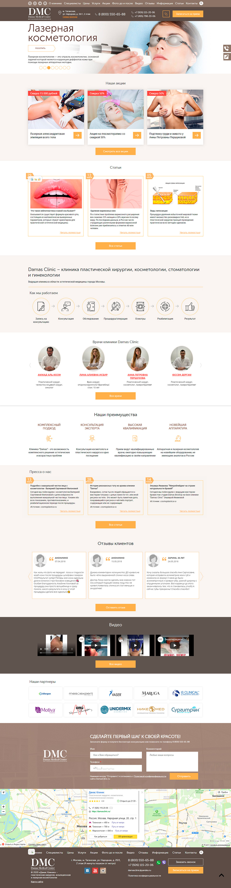
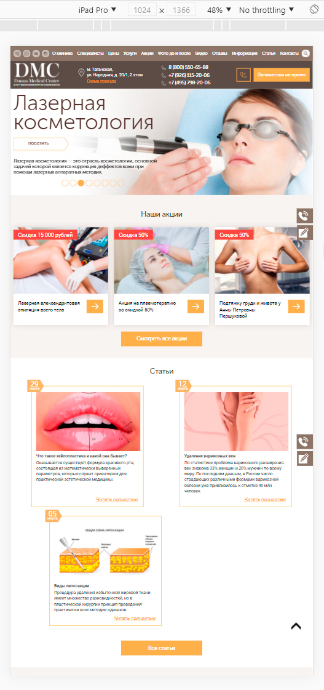

Redesign of the main page of the site of the clinic of plastic surgery and cosmetology (Html, Css, jQuery)
What's interesting about the project:
- Added animations (jQuery + Css) in the slider and headers when scrolling.
- Filters and gradient overlays for images.
- 2-colored section backgrounds.
- Loading and playing YouTube videos only after a click.
- Fixed mobile menu: showing and hiding when resizing a page.
Completed work:
- Design: creation in Photoshop, rendering of graphics, backgrounds and preloader.
- Layout. Implemented: preloader, mobile menu (mmenu plugin), different images for different screens (<picture>), sliders (Owl carousel), tabs (jQuery UI tabs), modal windows.
Links
Project: Damasclinic.ru
Screenshots and video
Previous page view (1920 pc screen):

Previous page view (fragment, screen 1024 pc):

Responsive layout bugs that have been fixed: